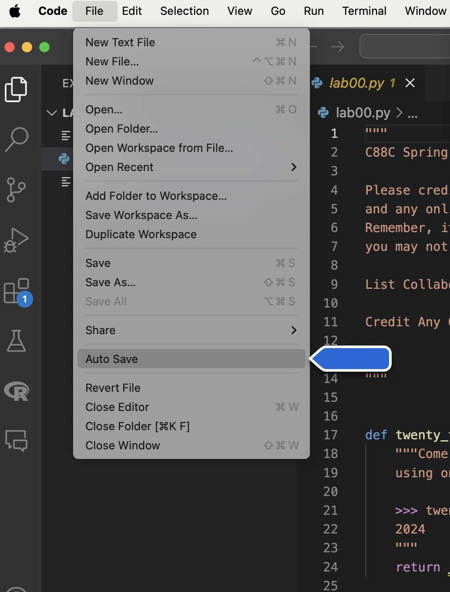
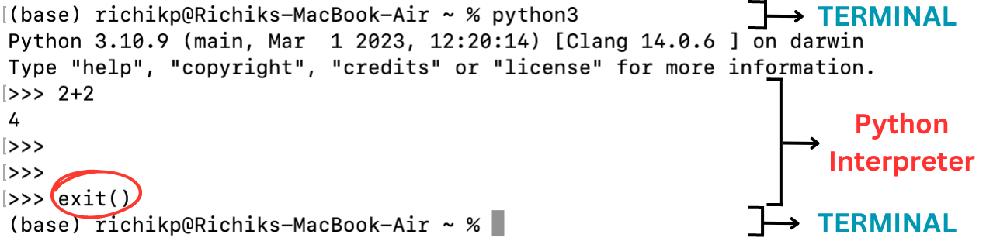
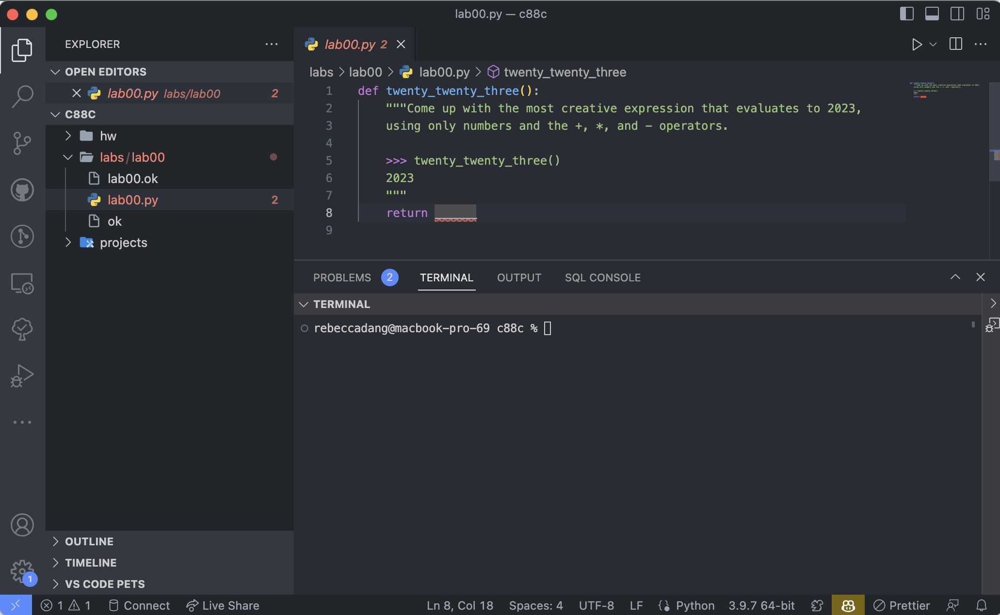
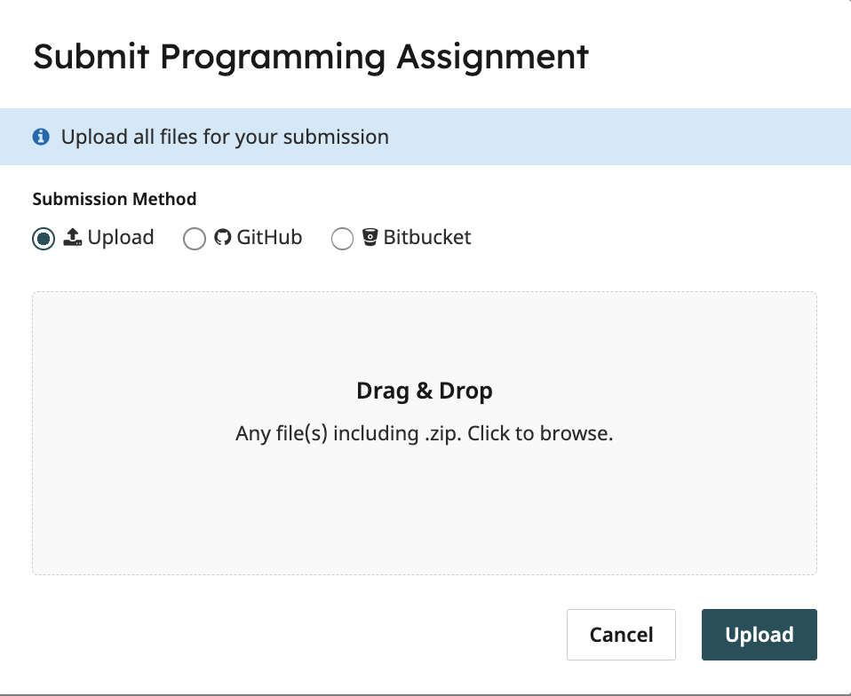

Lab 0 Solutions
There is a submission for this lab to ensure you have everything set up properly. It is very important you READ THROUGH THE WHOLE LAB.
Community Building Exercise
At the beginning of class, you will be participating in several activities that introduce you to the community of C88C—your TA and most importantly, your fellow classmates.
Data 8 vs C88C
In Data 8 you are doing all your development in the cloud on datahub.berkeley.edu, but we will be using your personal computer for C88C. If you are using the instructional machine in the lab you can ignore this section.
In C8, you mainly work in a Python (Jupyter) notebook: you type a piece of code into a cell, run the cell, and voila, the output is magically displayed. Furthermore, you can type text in addition to code in a Python notebook; all the titles, subtitles, and instructions are text.
However, more often in the real world you would be using a combination of terminal and text editor to run your program. And that’s what we will be doing in this class. This splits the process of writing code and running the code — you use a text editor to write your code and then you run your code using Python on the terminal.
Introduction
This lab explains how to use your own computer to complete assignments for C88C. If you are using a school computer, most of the instructions are the same, except you won't have to install anything.
Setup
Install a terminal
The terminal is a program that allows you to interact with your computer by entering commands. No matter what operating system you use (Windows, MacOS, Linux), the terminal will be an essential tool for C88C.
Mac or Linux
If you're on a Mac or are using a form of Linux (such as Ubuntu), you already have a program called Terminal on your computer.
- For Mac users, you can open the Terminal by pressing
Cmd + Spaceto open Spotlight Search, then type in "Terminal" and click on the corresponding application to launch it. - For Linux users, you may need to search up how to open the Terminal depending on your Linux distribution.
Windows
For Windows users, we recommend downloading a terminal called Git Bash. Please follow the instructions to download Git Bash here:
- Head to this website
- Click the Windows download link.
- Open the downloaded file and follow the setup instructions that follow. You should be able to install Git Bash with most of the default configuration options, with one exception. In the "Configuring the terminal emulator to use with Git Bash" step, select the second option: "Use Windows' default console window."
Install Python 3
Python 3 is our primary programming language. Download the latest version of Python for your operating system (Mac, Windows, Linux) here. Note: Python 3.10+ is recommended for this class. Then follow the instructions for your specific operating system below.
There are 2 major versions of Python in use today: Python 2 and Python 3. In this class, and in most modern applications, we use Python 3 (so when we say "Python" in this class, we really mean "Python 3"). Python 3 is not backwards compatible with Python 2. However, some legacy applications may still use Python 2, which has slightly different syntax and functionality. For example, Python 2 comes preinstalled on Mac, but we want to install Python 3.
Mac
- Open the downloaded Python 3 installer file.
- Follow all of the instructions to install Python 3.
To verify that you have installed it properly, open a new Terminal, type the following command, and press enter:
python3 --versionIf installed properly, you should see the following text in your Terminal, where XX.XX is replaced by whichever version of Python 3 you installed. For example, Python 3.11.4.
Python 3.XX.XXWindows
- Open the downloaded Python 3 installer file.
- When following the installation instructions, check the box that says "Add Python 3.XX to PATH" (where "XX" is replaced by whichever version of Python 3 you installed, such as "Python 3.11"). This will allow you to execute the
pythoncommand from your terminal (Git Bash).

To verify that you have installed it properly, open Git Bash, type the following command, and press enter:
python3 --versionIf installed properly, you should see the following text in your Terminal, where XX.XX is replaced by whichever version of Python 3 you installed. For example, Python 3.11.4.
Python 3.XX.XXNote: If using python3 --version doesn't work, try python --version, py --version, or py3 --version.
Install a text editor
Your computer's terminal combined with the Python 3 you just installed allows you to run Python code. You will also need a text editor, which will help you write Python code.
A text editor is a program that allows you to edit text files (including files that contain code), and often comes with tools to help you customize your experience. You will be using a text editor to create, modify, and save files.
There are many editors out there, each with its own set of features. We highly recommend for this class you use Visual Studio Code, aka VS Code. Visual Studio Code is a full-featured desktop editor with many extensions available to support different languages, and is widely used by course staff.
Note: Please, please, please do not use Microsoft Word to edit programs. Word is designed to edit natural languages like English — trouble will ensue if you try to write Python with Word!
Pair Programming
Throughout this course, you will have many chances to collaboratively code with others in labs and projects. We recommend you download VS Code's Live Share extension to help with this: It's like Google Docs, but for writing code!
Using the terminal
Terminal Walkthrough
Your computer's terminal is a command line system or tool for you to interact with folders and files on your computer.
If you're on a Mac, open Terminal. If you're on Windows, open Git Bash (which you should have installed earlier). Follow along by trying out the commands in the following walkthrough.
When you open up the terminal, you'll see something called a prompt (usually $ or %) right before your cursor. This is how you can tell that you are in the terminal and it is ready to accept commands.
When you open up the terminal directly, you'll start off in something called your home directory, represented by a tilde (~). A directory is just a fancy word for folder. Directories can contain files or other directories. The location of every file or directory is denoted by a path. For example, consider the following file structure:
~
|-------Desktop
| |
| |-------Screenshots
| |-----------a.png
| |-----------b.png
|-------Downloads
| |-------c.txtThe absolute path to the file a.png is ~/Desktop/Screenshots/a.png. As the name suggests, this path is absolute — it is the full and complete path and a file/directory's absolute path doesn't change (unless its location of the file/directory changes).
Suppose that the directory you're currently in is Desktop. Then the relative path to the file a.png is /Screenshots/a.png. As the name suggests, this path is relative to the directory you currently are in. If you were in the Downloads directory, the relative path would be ../Desktop/Screenshots/a.png. Note that .. represents the parent directory and . represents the current directory.
Now go back to your terminal window. You can view the contents of a directory using the command ls (short for "list").
To display the absolute path of your current directory, use the command pwd (short for "print working directory").
To move between directories, use the command cd <path> (short for "change directory"). Replace <path> with the relative or absolute path that you want to go into. For example, if you are on a Mac, enter
cd desktopto go into your Desktop directory. (The absolute path is ~/Desktop. You can also try doing cd ~/Desktop to see if it does the same thing — it should!)
The most common terminal commands are as follows:
ls- lists out all the files and directories in the current directorycd <path>- move into the directory specified by the given<path>cd ..- move up to the parent directorycd ~- move to the home directory
mkdir <directory_name>- "make directory", or create a folder in the current directory with the given<directory_name>touch <file_name>- create a new file with the given<file_name>clear- clear previous commands to make terminal look cleanerrm <file_or_directory>- deletes the given file or directory (WARNING: there is no way to recover files deleted this way. They do NOT go to your trash/recycle bin, they just get deleted permanently.)mv <source_file> <target_directory>- moves the given source file to the given target directory
You may also find these keyboard shortcuts useful:
Up Arrow- replaces the current command you've typed with the last command you entered. You can pressUp Arrowas many times as needed to go through your previous commands.Ctrl + C- aborts current command. Useful if you ran a command and it's stuck loading forever or you want to cancel a command. (Note: For Mac, Ctrl is literally the Control button, not the Command button.)Ctrl + R- allows you to search for previous commandsTab- When entering commands, you can pressTabfor autocomplete. If you pressTabtwice, it will display all autocomplete possibilities.
You aren't expected to memorize these terminal commands and they will not be tested. You can also take a look at our UNIX tutorial for a more detailed explanation of terminal commands. They're just useful for you to know as you complete assignments and when you work on real-world projects at your job.
Creating a c88c directory
For this course, we recommend that you put all of your coding assignments in one overarching directory called c88c. We also recommend putting this directory into a place that you remember and can easily access from the terminal, such as your desktop directory. Inside of that directory, create 3 more directories that will contain the different types of assignments: labs, hw, and projects.
Here is an example sequence of commands to accomplish this task (this may be different depending on which directory you're located in on your terminal):
cd desktop
mkdir c88c
cd c88c
mkdir labs
mkdir hw
mkdir projectsYou can verify that you have setup the c88c directory correctly by opening your computer's file explorer (Finder for Mac or File Explorer for Windows) and navigating to where you stored c88c, or by using ls and pwd in your terminal.
VS Code Integrated Terminal
As you work on coding assignments in this course, you will often find yourself switching back and forth between writing code and running code. To make things easier, you do not need to open your terminal app and text editor separately — you can have everything in one window. The following instructions are applicable to VS Code (the recommended editor), but most editors have a similar integrated terminal feature.
- Open VS Code
- At the top menu bar, go to File > Open and click on the
c88cdirectory you just created. - At the top menu bar, go to Terminal > New Terminal. It should open a mini terminal window inside your VS Code window. Note: For Windows, ensure that the terminal opened is Git Bash (Windows has multiple types of terminals). See this article for how to select Git Bash. You can also configure your terminal settings so that every time you create a new terminal in VS Code, it defaults to opening a Git Bash shell.
- Turn on auto-save in your text editor so that your changes are automatically saved to the file.
In VS Code, you can do this by going to
File>Auto Saveas shown in the image below.

When you open an integrated terminal, your text editor will automatically move you into the directory that you opened in step 2. In this case, it would be something like
~/Desktop/c88c. You can always verify this by runningpwdin the terminal to make sure the path that is displayed is the one you expect.
Python Interpreter Walkthrough
Throughout the course, you may want to try running small bits of Python code and see what gets returned or printed. You can do this using the Python Interpreter, which comes with your installation of Python 3. Follow along with the walkthrough below in your own terminal.
While you run the Python interpreter inside a terminal shell, the commands you input into the terminal are different from the code you input into the Python interpreter. You can only use Python syntax in the Python interpreter (e.g. when the prompt is
>>>) and you can only use terminal commands in the terminal (e.g. when the prompt is$or%)Any code you write in the Python Interpreter is NOT saved. When you exit, everything will be lost. When writing code for assignments, you should write your code directly into the Python files. However, for testing or debugging you may want to use the Python Interpreter which is why we show you how to use it here.
Run the following command in your terminal:
python3If the Python 3 installation worked, you should see something similar to this:
Python 3.11.4 (main, Jan 20 2024, 17:35:35) [Clang 14.0.0 (clang-1400.0.29.202)] on darwin
Type "help", "copyright", "credits" or "license" for more information.
>>> This is where you can type in Python code. Try typing some expressions you saw in lecture, or just play around to see what happens!
You can type exit() or Ctrl + D to return to your command line. If you're on a Mac, it looks something like this:

Windows troubleshooting:
- If the
python3command doesn't run at all:
Trypython,py, orpy -3instead.- If Python freezes (doesn't display anything at all):
You probably didn't select the "Use Windows' default console window" option when installing Git-Bash manually. Trywinpty python, or just uninstall Git-Bash and reinstall it with the correct options.- If you see an error like
WindowsApps/python: Permission denied:
Go to theWindowsAppsfolder whose path is shown, and renamepython.exetopython.bak.exe(and similarly, renamepython3.exetopython3.bak.exe), then try again.- If Python doesn't run at all, and you used our automated installer:
Go back and try installing using the manual method.- If Python doesn't run at all, and you installed manually:
Make sure you set up your "PATH" correctly as shown above.- If you mixed multiple versions of Python (e.g. 32-bit and 64-bit, or 3.6 and 3.8, etc.):
They may conflict. Occasionally, this becomes extremely difficult to fix—even for instructors.
Uninstall them one-by-one (the most recent one first), then reinstall only the latest 64-bit version.Ask for help if you get stuck!
Note, if you have trouble opening or setting up a terminal on your computer, an alternative option (though this is not recommended) is to use datahub. To open a terminal in datahub, click on “new” in the upper-right hand corner, and click on terminal. Most likely you won't ever need this if everything else is set up properly on your computer, but you may play around with the terminal here if you'd like.

When you open a terminal in datahub, it looks something like this:

Python Basics
Here's a quick refresher on Python basics. Feel free to follow along on your own Python Interpreter with the Python expressions below.
Floating point numbers (floats) behave a lot like real numbers. You can identify a float by the decimal point. All floats have decimal points. To write a floating point number (as a literal), you must add a decimal point!
>>> 3.141592
3.141592
>>> 2 * 3.141592 # you can mix ints and floats
6.283184
>>> pie = 3.141592 # you can assign values to variables
>>> pie
3.141592
>>> pie / pie
1.0
>>> pie / pie == 1 # a float can be equal in value to an int
True
>>> from math import pi # here is a better pi
>>> pi
3.141592653589793
>>> 5.0 / 3.0 # this is division of floats, not ints
1.6666666666666667
>>> 2 ** (1 / 2) # square root - isn't that transcendental?
1.4142135623730951Expressions follow operator precedence (just like in math). Operations are performed one at a time in a specific order. Parenthesis are used to specify order (again, just like in math - remember PEMDAS?).
>>> 2 + 3 - 4 + 5 # equal precedence, left to right
6
>>> 2 + 3 - (4 + 5) # order matters - parentheses are your friend
-4
>>> (((2 + 3) - 4) + 5) # explicit order of the first example
6
>>> 2 + 3 * 4 # * and / bind more tightly than + or -
14
>>> 2 + (3 * 4)
14
>>> (2 + 3) * 4
20
>>> 2 + 3 / 4 * 5 # what about * and / ?
5.75An expression can have multiple return values, called a tuple:
>>> 2, 3
(2, 3)
>>> x, y = 1, pi
>>> x
1
>>> y
3.141592653589793Doing the assignment
Downloading the assignment
We will begin the assignment by first downloading the zip file,
lab00.zip. Make sure to save it to your c88c/labs directory.
If you make a mistake or have already downloaded it, you can always drag the zip file
manually using your file explorer (e.g. Finder on Mac or File Explorer on Windows)
or use the mv command in the terminal to move the file to the correct folder.
Extracting starter files
- Open the
c88cdirectory on VS Code. - Open a new integrated terminal on VS Code (or a separate terminal if you prefer).
- In the terminal, ensure you are in the
c88cdirectory (if not,cdinto it). - In the terminal, enter
cd labs. - In the terminal, enter
unzip lab00.zip. This will unzip the file. Note: If you already opened thelab00.zipfile upon downloading it, you may not need to do this step. You can tell if the file is already unzipped if you see a new folder calledlab00in thec88cdirectory (see step 6). - Once you unzip
lab00.zip, you should have a new folder calledlab00in thec88cdirectory which contains the following files:
lab00.py: The template file you'll be adding your code took: A program used to test assignmentslab00.ok: A configuration file forok
You no longer need lab00.zip and can delete it from your c88c folder if you want.
You're now ready to start looking at the code! Don't worry if this seems
complicated — it will get much easier over time. Just keep practicing!
Workflow overview
For each assignment, we'll provide you with some starter code (for example, lab00.py);
all you have to do is fill in the parts that are incomplete.
Open lab00.py in your text editor of choice (this will be Visual Studio Code, Vim, etc.).
Turn on auto-save in your text editor so that your changes are automatically saved to the file.
In VS Code, you can do this by going to File > Auto Save as shown in the image below.
In our productive workflow, we suggest having your text editor and terminal open at the same time.
- Your text editor (e.g. VS Code) with the files you are editing, where you will write code.
- Your terminal window (e.g. Terminal or Git Bash) so you can easily test your code. We recommend using your text editor's integrated terminal, but you can also have a separate terminal window if you'd like as well.
Here's a screenshot of a typical workspace.

This screenshot uses Visual Studio Code and its integrated terminal on MacOS, and is from the year 2023. This particular setup might look different from yours. That's okay!
Question 1: Twenty Twenty Four
Open up lab00.py in your text editor. You should see something like this:
def twenty_twenty_four():
"""Come up with the most creative expression that evaluates to 2024,
using only numbers and the +, *, and - operators.
>>> twenty_twenty_four()
2024
"""
return ______
return 2 * 1000 + 24The lines in the triple-quotes """ are called a docstring, which is a
description of what the function is supposed to do. When writing code in C88C,
you should always read the docstring!
The lines in the docstring that begin with >>> are called doctests.
Doctests explain what the function is supposed to do by showing actual Python code.
The lines underneath the >>> show the expected output from running the above Python code
in the Python Interpreter, assuming the function has been defined.
In twenty_twenty_four,
- The docstring tells us to "come up with the most creative expression that
evaluates to 2024," but that we can only use numbers and arithmetic operators
+(add),*(multiply), and-(subtract). - The doctest for
twenty_twenty_four()checks that no matter how we do our calculation,twenty_twenty_fourshould return the number 2024.
You should never change the doctests in your assignments! The only part of your assignments that you'll need to edit is the code.
Writing code
Once you understand what the question is asking, you're ready to start writing
code! You should replace the underscores in return ______ with an arithmetic expression that
evaluates to 2024. What's the most creative expression you can come up with?
Manual Tests
Below is an example of how to write and test your code manually (later we will show you how to run the autograder tests with OkPy).
Open lab00.py in your text editor. Start by simply returning 2024. This is not
very creative, but it gives the right answer.
In your terminal, ensure that you are in the lab00 directory. If you're currently in the c88c directory, you will need to run:
cd labs/lab00Once you are in the lab00 directory, run:
python3 -i lab00.pyThis should open the Python interpreter. Notice that we added -i to the python3 command.
The -i is called the "interactive flag" because it loads and runs the code in the file
you gave it (lab00.py) and then allows you to enter more Python code
in the interpreter. This will allow you to call the function in the Python interpreter
and it should display 2024.
>>> twenty_twenty_four()
2024On the other hand, if you just entered python3 and tried to call the function, it would give you an error since it doesn't recognize your function (it hasn't been loaded).
Additionally, if you omitted the -i and ran this command in the terminal:
python3 lab00.pyThis would simply run the lab00.py file. Since this file only contains a function definition, it will not display any output (since in the file you didn't call the function).
Once you're done testing, exit the Python interpreter to get back to your terminal shell (enter exit()). You will need to do that each time you run Python interactively.
You are going to want to learn to test your code before submitting it to the autograder. This always begins with reading it, thinking about it and convincing yourself it should work. Come up with examples that verify it really does what it should. That is what goes into the docstring.
Troubleshooting tests (for both manual and autograder tests): If you are trying to test your code and you're not getting the output you expected, there could be many things going on.
- It's possible that the code you wrote has a bug in it. You can debug these in a variety of ways, such as
- It could be that you forgot to save the file you were working on. You can check whether a file has unsaved changes in VS Code by seeing if there is a white circle in the file tab. (To prevent this problem from happening, you can turn on VS Code auto save.)
- If you are manually testing using the Python Interpreter with the
-iflag, be aware that when you save changes to the file, it does not update automatically. You must exit the Python interpreter and restart it again with the-iflag to load the updated code.
Running tests
In C88C, we will use a program called ok to test our code. ok will be
included in every assignment in this class.
Back to the terminal! Make sure you are in the lab00 directory we created
earlier (remember, the cd command lets you change directories).
In that directory, you can type ls to verify that there are the following
three files:
lab00.py: the starter file you just editedok: our autograderlab00.ok: a configuration file for OK
Now, let's test our code to make sure it works. You can run ok with this
command:
python3 ok -q twenty_twenty_fourIf you wrote your code correctly, we should see a successful test:
=====================================================================
Assignment: Lab 0
OK, version v1.18.1
=====================================================================
~~~~~~~~~~~~~~~~~~~~~~~~~~~~~~~~~~~~~~~~~~~~~~~~~~~~~~~~~~~~~~~~~~~~~
Running tests
---------------------------------------------------------------------
Test summary
1 test cases passed! No cases failed.
Backup... 100% complete
Backup successful for user: oski@berkeley.edu
URL: https://okpy.org/cal/cs88/sp24/lab00/backups/abc123
OK is up to dateIf you didn't pass the tests, ok will instead show you something like this:
=====================================================================
Assignment: Lab 0
OK, version v1.18.1
=====================================================================
~~~~~~~~~~~~~~~~~~~~~~~~~~~~~~~~~~~~~~~~~~~~~~~~~~~~~~~~~~~~~~~~~~~~~
Running tests
---------------------------------------------------------------------
Doctests for twenty_twenty_four
>>> from lab00 import *
>>> twenty_twenty_four()
2014
# Error: expected
# 2024
# but got
# 2014
---------------------------------------------------------------------
Test summary
0 test cases passed before encountering first failed test case
Backup... 100% complete
Backup successful for user: oski@berkeley.edu
URL: https://okpy.org/cal/cs88/sp24/lab00/backups/abc123
OK is up to dateFix your code in the text editor until the test passes. See also the troubleshooting tests section above if you're having trouble.
Final Task: Submitting the Assignment
Now that you have completed your first C88C assignment, it's time to turn it in. You can follow these next steps to submit your work and get points.
Submit with Gradescope
Log in with School Credentials using your CalNet ID to Gradescope. You’ll be taken to your Dashboard as soon as you log in.


- On your Dashboard, select the course C88C. You should have already been added to Gradescope. If this is not the case, please make a private Ed post. This will take you to the list of assignments in the course that you’re able to submit. On this list, you will see the status of the assignment, the release date, and the due date.
- Click on the assignment to open it.
When the dialog box appears, click on the gray area that says Drag & Drop. This will open your file finder and you should select your code file (example:
lab00.py) that you edited for this assignment.
Once you’ve chosen your file select the Upload button. When your upload is successful, you’ll see a confirmation message on your screen and you’ll receive an email.

IMPORTANT: Wait a few minutes for the autograder to grade your code file. For all assignments, it is YOUR responsibility to verify that the Gradescope autograder results matches what you expect. Your final score will appear at the right and your output should be the same as the one you tested locally. You can check the code that you submitted at the top right where there is a tab labeled Code. If there are any errors, you can edit your code and click Resubmit at the bottom of your screen to resubmit your code file. Assignments can be resubmitted as many times as you’d like before the deadline. Note that the screenshot is from 2023, but your year will be different.

🎉🎉 Congratulations on finishing your first lab! And welcome to C88C. We hope this will be a rewarding semester!
Appendix
Useful Python command line options
When running a Python file, you can use flags on the command line to inspect your code further. Here are a few that will come in handy. If you want to learn more about other Python flags, take a look at the documentation.
Using no flags will run the code in the file you provide and return you to the command line.
python3 lab00.py-i: The-ioption runs your Python script first, then opens an interactive session. To exit, typeexit()into the interpreter prompt. You can also use the keyboard shortcutCtrl-Don Linux/Mac machines orCtrl-Z Enteron Windows.If you edit the Python file while running it interactively, you will need to exit and restart the interpreter in order for those changes to take effect.
python3 -i lab00.py-m doctest: Runs doctests in a particular file. If there is no output, it means all doctests passed. Doctests are marked by triple quotes (""") and are usually located within functions. DO NOT DELETE DOCTESTS ON YOUR LABS AND HOMEWORKS. The autograder (OK) will not run properly without them.python3 -m doctest lab00.py
Python Tutor
Python Tutor is a website that allows you to write Python code in your web browser and see it visualized step by step. This is a super useful tool that can help you understand exactly what your code is doing and also keeps track of what variables’ values are along the way. If you ever have trouble understanding what your code is doing, or finding a bug, pull up python tutor and step through it!
(Optional) Text Editor Guides
For your reference, we've written some guides on using popular text editors. After you're done with lab, you can take a look if you're interested: